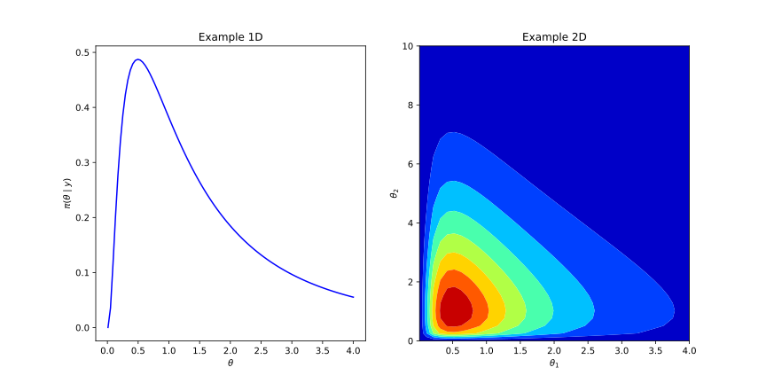
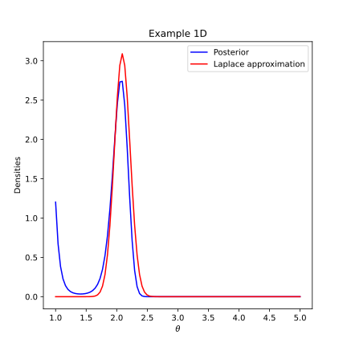

Nonlinear problems
Bayesian nonlinear inverse problems
Now we focus in finite dimensional nonlinear problems, i.e., those with forward mapping given as a function \(\mathcal{G}:\mathbb{R}^{m}\to \mathbb{R}^{n}\). Let us remark first the structure of the posterior distribution, which is given as follows: $$\pi_{post}(\theta\mid y) \propto \exp\left(-\frac{1}{2}\Vert \mathcal{G}(\theta)-y \Vert_{\Gamma^{-1}}^{2}\right)\pi_{0}(\theta)$$ Now we do not have a closed formula as in the case of linear operators, then we are need to apply different techniques depending the dimensions of the parameters and the data, or the prior information of the parameters. In general we do not have a unique formula or methodology, nevertheless, we can suggest here some standard methodolgies for deal with the parameter estimation.
Density visual analysis
It consist only in generate a plot of the posterior density (in an specific domain). This technique is only valid in 1 and 2 dimensional cases. It is really useful for locate the MAP of the density, discover multimodalities, and also for visualize the uncertainty of the density. Nevertheless, this technique does not provide a quantitative way to estimate the statistical estimators of the posterior distribution (mean, variance and moments).

Sampling techniques
As we have mentioned in other sections, the generation of samples is one of the most straighforward ways to obtain quantitative information of the posterior distribution. Here, we can use the standar techniques as rejection sampling or all the variants of MCMC (Link to the section). This is possible due in Bayesian statistics the proportionality constant \(Z(y)\) is not necessary for define the acceptance probability of the Metropolis-Hasting Kernel. The quantity is reduced as follows: $$ a(\theta,\hat{\theta}) = \text{min}\left(\frac{\exp\left(-\frac{1}{2}\Vert \mathcal{G}(\theta)-y \Vert_{\Gamma^{-1}}^{2}\right)\pi_{0}(\theta)q(\hat{\theta},\theta)}{\exp\left(-\frac{1}{2}\Vert \mathcal{G}(\hat{\theta})-y \Vert_{\Gamma^{-1}}^{2}\right)\pi_{0}(\hat{\theta})q(\theta,\hat{\theta})},1\right), $$ where an strategical election of \(\pi_{0}\) (as an exponential family density or uniform) can reduce the expression.Advantages
1) This technique is straighforward and there exist different sampling methods.
2) Is possible to estimate numerically the statistical estimators.
3) It can provide a visual analysis of the density via the histograms.
4) If the plot of forward mapping is a curve, we have automatically all the evaluations of the forward mapping for plot the envelopes of the model.
Disadvantages
1) In high-dimensional parameter spaces, the convergence to the target distribution can be extremly slow and it could be complicated to estimate the burnin time for truncate the chain. As a consequence, the number of samples could be prohibitively high in order to ensure the convergence.
2) Some forward mappings are high computationally expensive, even in small parameter dimensional spaces. This issue produces a long time evaluation period in the MCMC methods. This problem cannot be solved using parallel computing techniques, the reason is the strong serial dependence in the Markov chain process.
3) Some methods can have difficulties for generate samples of multimodal distributions. Once the Markov chain is near to a modal point, the required time for move to another MAP could be long.
4) Some distributions could not have the previosly mentioned isssues, nevertheless, the geometry of the posterior density could have an strange form as ilustrated in the example (Link to Banana). Here, it is convenient to look for adaptative MCMC methods.
Even, that we have mentioned several disadvantages this is one of the most straightforward ways to analyse a posterior density.

MAP estimation
Here the inversion is reduced to the estimation of the MAP $$ \theta_{MAP} = \arg\max_{\theta} \pi(\theta \mid y), $$ which is given by the minimization problem $$ \theta_{\text{MAP}} = \arg\min_{\theta} \left( \Vert y - \mathcal{G}(\theta) \Vert_{\Gamma^{-1}}^2 + \log(\pi_{0}(\theta)) \right), \quad \theta\in\mathrm{Supp}(\pi_{0}). $$
This method is useful in high dimensional spaces, due some optimization libraries in Python and Matlab can solve highly efficient the minimization problem. Nevertheless, it does not provide a way to estimate the uncertainty in the model, even more, the MAP could be difficult to estimate for multimodal distributions.
Laplace approximation
This method consists in construct a local approximation of a unimodal posterior distribution with a Gaussian distribution. Here, we can use the formula for linear problems (Link). For it, we need a linear approximation of the forward mapping \(\mathcal{G}_{L}\theta \approx \mathcal{G}(\theta)\). Then, with a given prior covariance matrix \(C_{0}\), we can construct the posterior covariance matrix \(C_{L,post}\) as follows: $$ C_{L,post} = \left(\mathcal{G}_{L}^{*}\Gamma^{-1}\mathcal{G}_{L} + C_{0}^{-1}\right)^{-1}, $$ and finally, the approximated posterior is given by the expression: $$ \pi(\theta\mid y) \approx \mathcal{N}(\theta_{MAP},C_{L,post}). $$
The approximation works wells for a smooth forward mapping, however, the appoximation works poorly when the forward mapping is strongly nonlinear (high gradient zones or almost discontinious), or in general when the posterior distribution is poorly similar to a Gaussian distribution.

Bibliography
[1] Kaipio, J., & Somersalo, E. (2006). Statistical and Computational Inverse Problems (Vol. 160). Springer.
[2] Sanz-Alonso, D., Stuart, A. M., & Taeb, A. (2018). Inverse Problems and Data Assimilation. arXiv preprint arXiv:1810.06191.